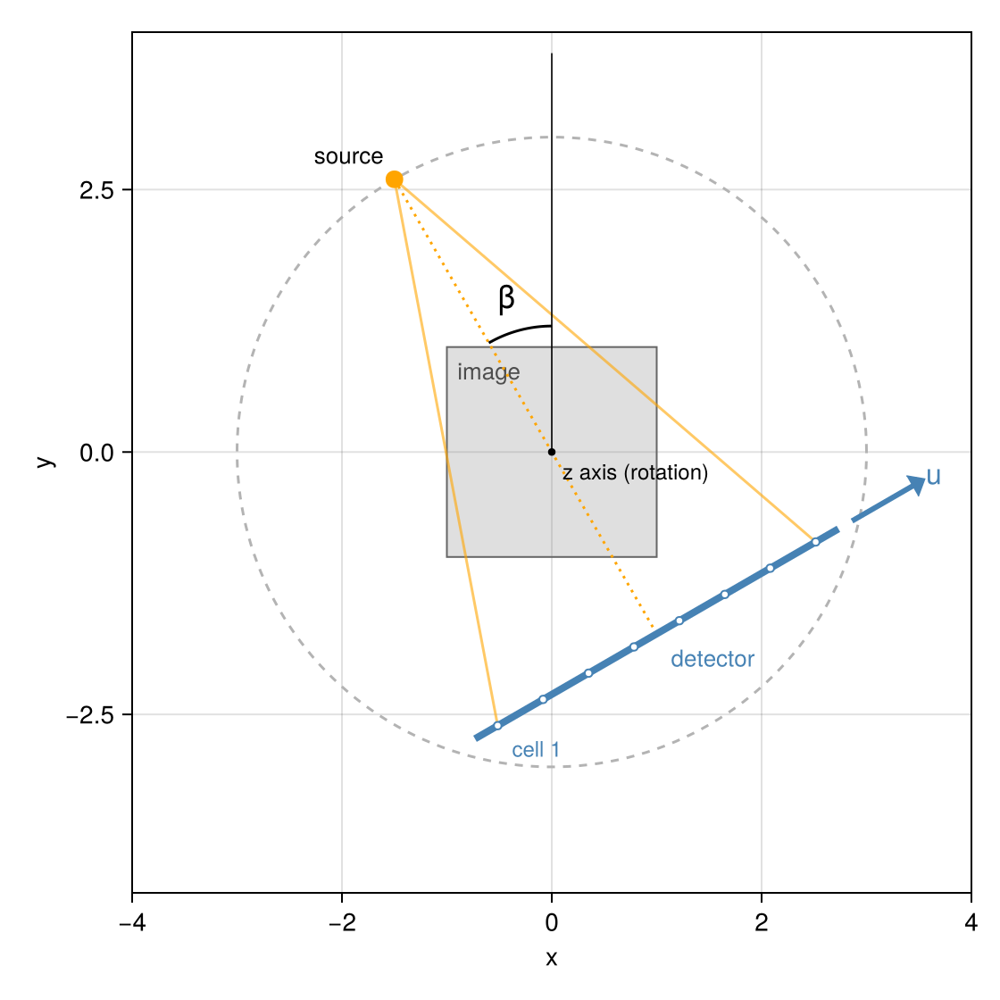

Coordinates and conventions
This page collects the conventions of CTOperators.jl: in which coordinates image and geometry are given, how the angles are measured and how the projection data is laid out. They follow those of Jeff Fessler's packages (Sinograms.jl, ImagePhantoms.jl), so that phantoms, geometries and analytic projections from there fit without conversion.
using CTOperatorstopview_figure (generic function with 1 method)World coordinates
Everything lives in one right-handed coordinate system (x, y, z). Lengths have no fixed unit: image and geometry only have to use the same one (mm in the examples). For rotating scanners the rotation axis is the z axis.
The image
The image is described by an ImageGeom of ImageGeoms.jl: dims voxels of size deltas, centred at the origin unless shifted by offsets (in voxels). Voxel i (counted from 1) has its centre at
\[x_i = \left((i - 1) - \frac{n - 1}{2} - \text{offset}\right) \Delta\]
per dimension; the voxel extends half a voxel to each side. Image arrays are ordered (x, y, z), x fastest. A 2D ImageGeom is one slice at z = 0 of thickness 1.
Cone beam and its trajectories
A view is given by the position of the source, the centre of the flat detector and two vectors u and v from one detector cell to the next, along the rows and the columns of the detector (ConeBeam). The ray of cell (iu, iv) runs from the source to the centre of the cell.
circular_cone_beam and helical_cone_beam place them as in the figure: the source at angle $β$ counter-clockwise from the y axis, at distance dso from the rotation axis,
\[s(β) = (-d_\text{so} \sin β,\; d_\text{so} \cos β,\; z),\]
the detector opposite at distance dsd from the source. The detector rows (u) run along +x at $β = 0$ and rotate with the source; the columns (v) run along +z. Seen from above:

A curved detector (ArcConeBeam, detector=:arc) lies on a cylinder of radius dsd about the source, with its axis along z; its cells are equally spaced in the fan angle, $γ_i = (i - (n_u + 1)/2 - \text{offset}_u)\, d_u / d_\text{sd}$, and $γ$ counts in the direction of u.
Detector offsets offset_u, offset_v are given in cells and have the sign of ImageGeoms' offsets: the cell positions along u are ((0:nu-1) .- (nu - 1)/2 .- offset_u) .* du.
Parallel beam
At angle $ϕ$ the rays of a ParallelBeam run along $(-\sin ϕ, \cos ϕ, 0)$ and the detector rows along $(\cos ϕ, \sin ϕ, 0)$. (The rays point the opposite way of the central ray of a cone-beam view at $β = ϕ$; for line integrals the direction does not matter.) These are the coordinates $(u, v, ϕ)$ of the analytic projections radon of ImagePhantoms.jl, which the test suite uses to check the projectors.
Projection data
Detector geometries produce arrays of size (nu, nv, nviews): u fastest, then v, then the views, one detector image per view. Ray lists produce one value per ray, in the order of the rays (or an array of the shape given by datasize). The value of a ray is the line integral of the image along it, in the length unit of the geometry: image value times length.
Segments and lines
Cone-beam rays and the rays of a RayList are segments from a start to an end point (RaySegment): only the part between the two points counts, which matters when a source or detector lies inside the volume. Parallel-beam rays are infinite lines (RayLine).
Voxel coordinates inside the projectors
Internally, the projectors trace rays in continuous voxel coordinates, in which the centre of voxel (i, j, k) has the coordinates (i, j, k) and every voxel is a unit cube. Voxel sizes, offsets and flipped axes (negative deltas) then need no special treatment in the kernels.
This page was generated using Literate.jl.